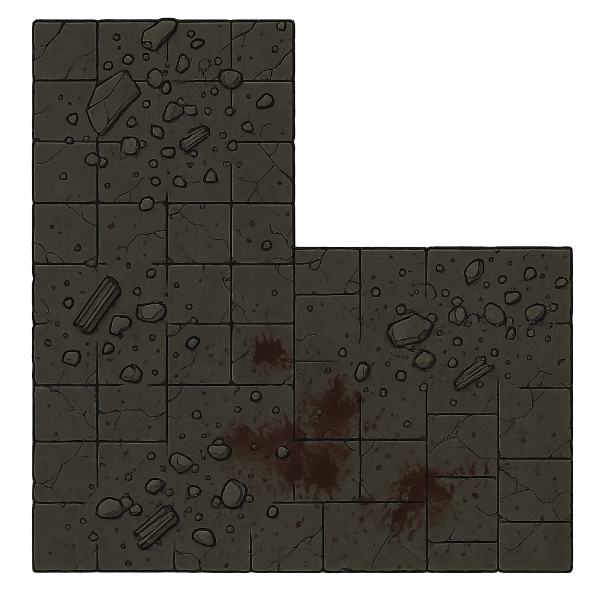
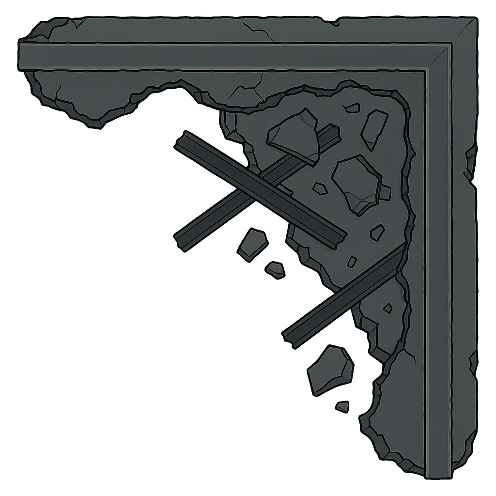

OpenAI gpt-image-1 is the winner. Here's what it looks like overlaid on our actual terrain, plus a two-layer occlusion experiment.
Terrain Replacement Preview OVERLAY
Each card shows the current in-game SVG with the AI-generated replacement layered on top. Toggle to compare. Images are scaled to match the in-game terrain area proportions.
L-Shaped Ruin (t1)
terrain-data.js t1 · 144×72px in-game
U-Shaped Ruin (t10)
terrain-data.js t10 · 144×72px in-game
Rectangular Ruin (t2)
terrain-data.js t2 · 144×72px in-game
Scatter Terrain (t4)
terrain-data.js t4 · 48×72px in-game
Two-Layer Occlusion EXPERIMENT
Terrain split into two layers: bottom (floor tiles, ground debris) and top (wall caps, overhanging beams, roof fragments).
A unit model is sandwiched between them, so walls partially occlude the model — creating depth without 3D.
Layer Breakdown
Each layer generated separately via gpt-image-1 with targeted prompts

① BOTTOM LAYER Floor tiles, ground debris, blood
② UNIT MODEL Rendered between layers

③ TOP LAYER Wall tops, beams, overhangs
Composited Result
Bottom → Model → Top. The wall and beams partially occlude the unit, creating the illusion of depth. Toggle layers to see the effect.
Toggle Layers:
How it works:
The top-left model is partially hidden by the wall overhang — simulating depth. Toggle the top layer off to see the model fully revealed underneath.
⚠ Note: The two layers don't perfectly align yet — they were generated independently. For production, we'd need consistent geometry between layers (same prompt seed or manual masking).
Interactive Generation TRY IT
Generate New Terrain
Legacy: Other Models Tested
These models were evaluated but don't produce usable results — kept for reference only.